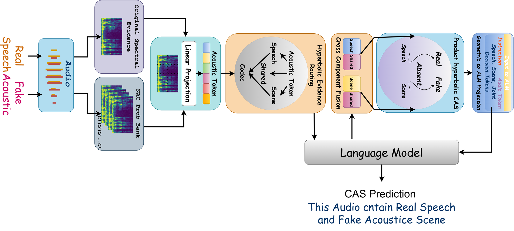
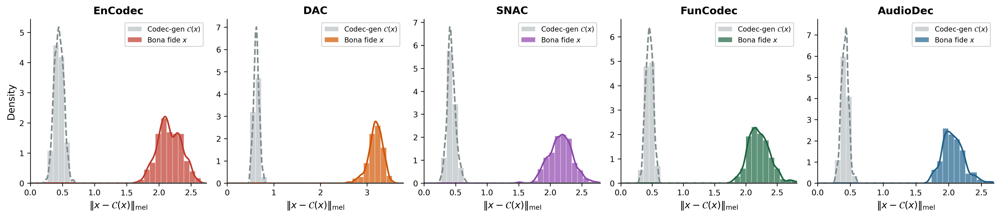

Existing audio spoofing detection systems treat authenticity as a binary property — an utterance is either genuine or fake. We challenge this assumption by introducing the Compositional Authenticity Space (CAS), a framework that models speech and environmental audio independently along a three-way axis: Absent (A), Real (R), or Fake (F). This yields eight distinct compositional states ranging from fully authentic scenes to mixed conditions where only one component has been synthesised. We present SAS-CF, a large-scale dataset of over 1.8M clips spanning these eight states, constructed from real-world speech corpora, environmental sound datasets, and 19 neural audio codecs. We further introduce HARPER (Hierarchical Audio Reasoning with Probe-Enhanced Representations), a model that combines neural codec probing, hyperbolic product-space reasoning, and a generative audio language model to jointly predict both speech and environmental authenticity. HARPER achieves strong performance on in-domain and unseen-codec evaluation while running at an RTF of 0.0265 — over 11× faster than prior state-of-the-art systems.
🧩Compositional Authenticity Space (CAS)
We model each audio scene as a pair (ys, ye) where ys ∈ {A, R, F} describes the speech component and ye ∈ {A, R, F} describes the environmental sound. Excluding the trivial (A, A) case gives 8 valid compositional states:
sr
Speech only — Real
Speech RealEnv Absent
sf
Speech only — Fake
Speech FakeEnv Absent
er
Environment only — Real
Speech AbsentEnv Real
ef
Environment only — Fake
Speech AbsentEnv Fake
Mrr
Mixed — Both Real
Speech RealEnv Real
Mff
Mixed — Both Fake
Speech FakeEnv Fake
Mrf
Mixed — Real Speech, Fake Env
Speech RealEnv Fake
Mfr
Mixed — Fake Speech, Real Env
Speech FakeEnv Real
🎧Audio Samples
Each sample below is drawn from the SAS-CF dataset. Samples are trimmed to 4 seconds and normalised. Labels indicate the ground-truth CAS state.
sr
Real speech, no environment
Speech: RealEnv: Absent
Sample 1
Sample 2
Sample 3
sf
Codec-synthesised speech, no environment
Speech: FakeEnv: Absent
Sample 1
Sample 2
Sample 3
er
Real environmental sound, no speech
Speech: AbsentEnv: Real
Sample 1
Sample 2
Sample 3
ef
Codec-resynthesised environment, no speech
Speech: AbsentEnv: Fake
Sample 1
Sample 2
Sample 3
Mrr
Real speech mixed with real environment
Speech: RealEnv: Real
Sample 1
Sample 2
Sample 3
Mff
Fake speech mixed with fake environment
Speech: FakeEnv: Fake
Sample 1
Sample 2
Sample 3
Mrf
Real speech mixed with fake environment
Speech: RealEnv: Fake
Sample 1
Sample 2
Sample 3
Mfr
Fake speech mixed with real environment
Speech: FakeEnv: Real
Sample 1
Sample 2
Sample 3
🗂️Dataset — SAS-CF
SAS-CF is constructed from the following public corpora and augmented using 19 neural audio codecs. The full dataset will be released on HuggingFace upon paper acceptance.
HARPER (Hierarchical Audio Reasoning with Probe-Enhanced Representations) combines neural codec probing, hyperbolic product-space CAS reasoning, and a generative audio language model (Qwen2-0.5B) to jointly predict both speech and environmental authenticity.

Figure: HARPER architecture. Audio is processed through original spectral features and a NAC probe bank, projected into acoustic tokens, routed via hyperbolic evidence routing, fused across components, and decoded by a language model to produce a joint CAS prediction.

Figure: Idempotence validation — distribution of ‖x − C(x)‖mel for bona fide clips (coloured) vs. codec-generated clips (grey). Codec-generated audio is near-idempotent under its own codec (small residual), while genuine audio is substantially distorted — justifying the use of a NAC probe bank.
📋Citation
@inproceedings{harper2026,
title = {Rethinking Audio Spoofing: When Authenticity Becomes Compositional},
booktitle = {Proceedings of the 64th Annual Meeting of the
Association for Computational Linguistics (ACL)},
year = {2026},
note = {Under review — anonymous submission}
}